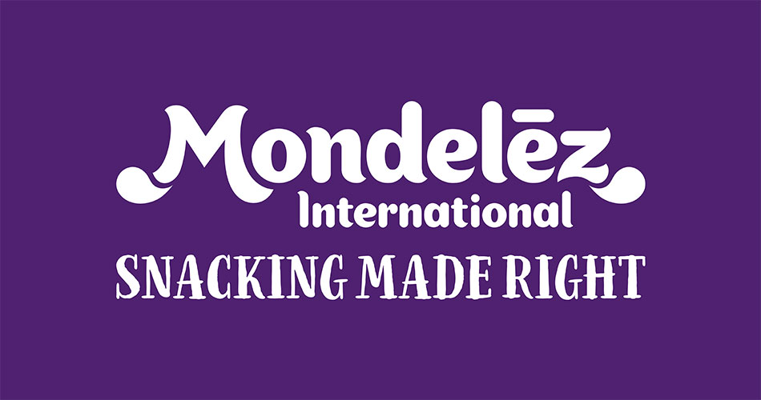
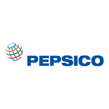

Summary
A dynamic Engineering graduate with hands-on experience in Manufacturing & Supply Chain operations.
Passionate about technology, currently honing skills in web development,
Eager to apply professional expertise along with programming learning to innovative solutions
while adapting to the ever-evolving tech landscape.
Dedicated to continuous growth and driving business success through strategic problem-solving.
Work Experiences

Mondelez International
Supply Chain Planner - 2020 - Present
Integrated Lean Six Sigma Engineer - 2019 - 2020

PepsiCo Inc.
Snacks Manufacturing Engineer - 2016 - 2019
Skills
- Problem-Solving
- Technical Aptitude
- Communication
- Project Management
- Data Analysis
- Continuous Learning
Contact Me